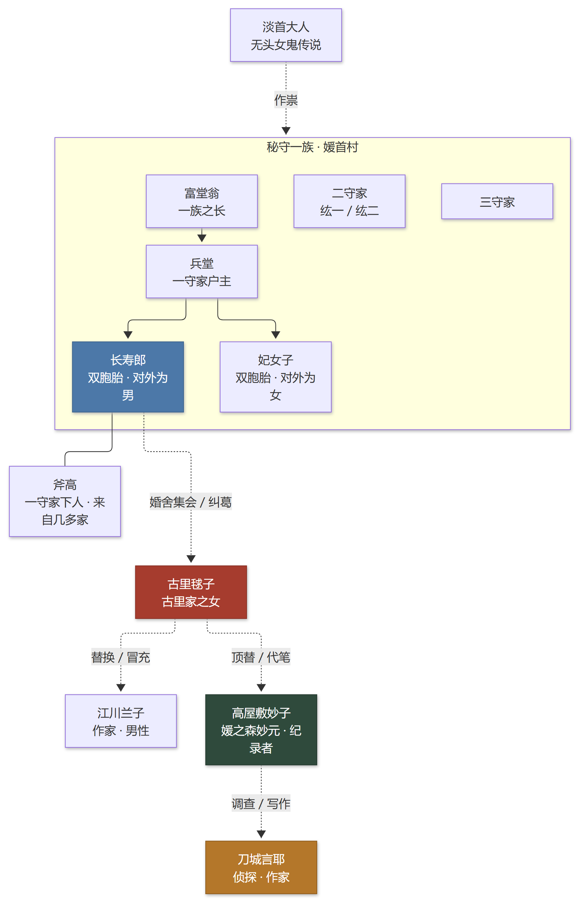
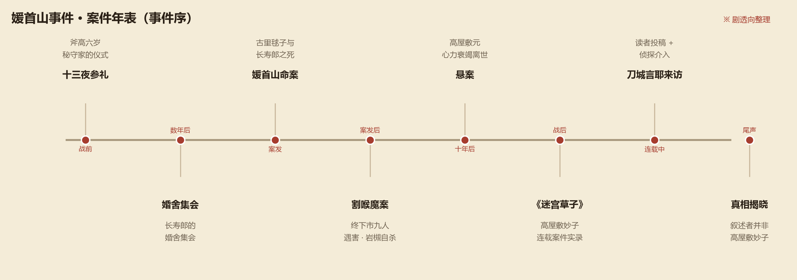
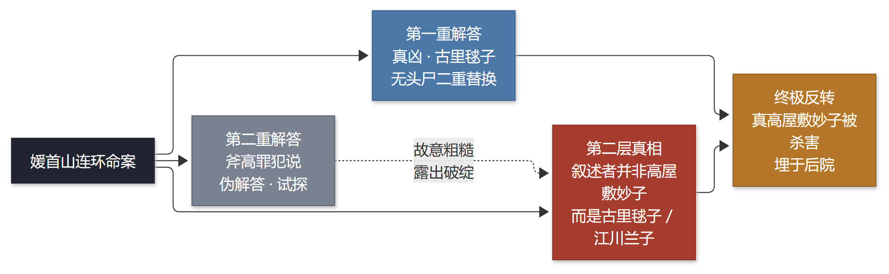

如首无作祟之物
首無の如き祟るもの · 三津田信三 · 刀城言耶系列 第三作
战时的奥多摩深山，秘守一族的双胞胎、无头女鬼「淡首大人」的传说、接连被斩首的死者。 一桩跨越十年的悬案，两封挑战读者书，三重解答，两层真相—— 以及一句让所有推理迷记了很多年的话：「只要发现一个事实，所有谜团都能迎刃而解。」
01作品档案
| 书名 | 如首无作祟之物（首無の如き祟るもの） |
|---|---|
| 作者 | 三津田信三（Mitsuda Shinzo），1968 年生，关西出身 |
| 系列 | 「刀城言耶」系列第三作（前两作为《如厌魅附体之物》《如凶鸟忌讳之物》） |
| 初版 | 2007 年 5 月，原书房 |
| 中文版 | 千本樱文库（张舟 译），以讲谈社文库本为底本修订 |
| 类型 | 本格推理 / 民俗恐怖 / 叙述性诡计 / 无头尸诡计 |
| 主要荣誉 | 2008 年第 61 届日本推理作家协会奖入围； 第 8 届本格推理大奖第 2 名（与获奖作相差 5 票）； 2016 年「20 年本格推理小说 BEST OF BEST」第 1 名（107 分） |
| 一句话 | 一部把「无头尸」这个老诡计写出原理级新意的本格推理杰作。 |
三津田信三擅长把乡土民俗、怪谈氛围与本格推理的公平竞赛结合在一起。刀城言耶系列的主人公 是一位四处取材的怪奇小说家，走到哪里都会撞上怪事，却总能在最后一刻看穿人心与诡计。 《首无》是这个系列公认的巅峰，也是很多读者心中「日本最优秀的本格推理小说」之一。
02舞台与传说
媛首村与秘守一族
故事发生在关东奥多摩的深山村落「媛首村」。村子由「秘守」一族统治，族内又分为 一守、二守、三守三家，其中一守家是族长所在的本家。秘守家的子嗣从小要经历名为 「十三夜参礼」的仪式——六岁、十六岁、二十六岁各一次，每十年一轮，合称「三三夜参礼」。 仪式在媛首山上的媛神堂举行，目的是祈求继承人平安长大。
淡首大人
媛首山供奉着「淡首大人」——一位被斩首的女鬼。传说她会在夜里出现，专门作祟于秘守家的孩子。 这个传说像一层阴影笼罩着整本书：所有死者都被斩首，所有怪事都像是「淡首大人」的手笔。
婚舍集会
秘守家的继承人成年后，要在「婚舍」举行选妻的集会。长寿郎的婚舍集会，正是整起悲剧的引线之一： 古里家的女儿古里毬子、以及围绕继承权的各方势力，都在这个仪式上登场。
「把一守家的荣耀世世代代传于子孙，是咱的责任。」 —— 富堂翁的醉话，也是整个秘守家悲剧的起点
03登场人物
- 斧高——一守家的下人，幼年时家人惨死，只有他活了下来。故事的第一视角之一。
- 长寿郎——一守家的继承人，双胞胎中的哥哥，体弱而温柔。
- 妃女子——双胞胎中的妹妹，性格泼辣，与哥哥待遇天差地别。
- 富堂翁 / 兵堂 / 富贵——一守家的族长、户主与夫人，守着家族的面子与继承秩序。
- 古里毬子——古里家之女，与长寿郎的婚事纠缠不清。
- 江川兰子——作家，长寿郎的笔友，身份并不简单。
- 高屋敷妙子（媛之森妙元）——案件实录《迷宫草子》的连载作者，也是全书的叙述者。
- 高屋敷元——高屋敷妙子的丈夫，律师，为追查案件耗尽心力。
- 刀城言耶——怪奇小说家，笔名东城雅哉；本书的侦探。
- 冬城牙城——刀城言耶之父，昭和时代的名侦探，在割喉魔案中出手。
- 甲子婆 / 铃江 / 佥鸟郁子 / 竹子 / 岩槻——乳母、女佣、家庭教师、相关人物与刑警。

04案件年表

故事从斧高六岁那年的「十三夜参礼」开始：一个没有月亮的夜晚，仪式出了事。 多年后，长寿郎的婚舍集会再次把所有人聚到一起，随后是媛首山上的连续斩首杀人案—— 古里毬子与长寿郎双双死亡，死状与传说如出一辙。案件还没查清，终下市又爆发了 「割喉魔」连环杀人案，九人遇害，刑警岩槻被捕后自杀，谜团越滚越大。
十年后，高屋敷元心力交瘁去世，案件成了悬案。战后，高屋敷妙子以《迷宫草子》为题 连载案件实录，向读者征集推理；刀城言耶循着连载找上门来——故事由此进入最后的解谜。
05三重解答与真相
⚠ 点开查看剧透：三重解答与两层真相
本书的结构不是「一个案子三个答案」，而是「两层真相」：第一层真相有两个解答（其中一个是伪解答）， 第二层真相才是真正的黑幕。
第一重解答：古里毬子是真凶
关键线索是「双胞胎出生时，把性别反过来报了」：对外是男婴的长寿郎，其实是女孩； 对外是女婴的妃女子，其实是男孩。古里毬子利用无头尸做了「二重替换」—— 先交换自己与长寿郎的尸体，再冒充江川兰子，从众人的眼皮底下逃了出去。
第二重解答：斧高罪犯说
侦探抛出的第二个答案，刻意做得粗糙、经不起推敲。这不是作者写崩了， 而是侦探用来试探「高屋敷妙子」的诱饵——真正的妙子会袒护斧高， 而眼前这个人接受了这个答案。
第二层真相：叙述者不是高屋敷妙子
全书叙述者「高屋敷妙子」其实是古里毬子假扮的（她曾以江川兰子的身份活动）。 真正的高屋敷妙子已经被她杀害，埋在后院。她代笔续写《迷宫草子》， 想把案件写成永远的悬案，却被刀城言耶当场识破。

尾声的一句话
刀城言耶在《尾声》里说出「当然了，因为你才是真凶」之前，先点破了两个细节： 眼前的人沏茶时在别人家里乱翻、被问起写作时间时露了馅——她根本没有真正执笔过； 而真正的高屋敷妙子，早已长眠于后院那个「和尸体尺寸相合」的土坑里。
「《前言》的叙述中不含任何谎言。」
「也就是说，作者完全没有做虚假叙述。不，可以说整篇文章都是这样。作者绝对没有故意说谎。」 —— 刀城言耶（《尾声》）
这句话是全书的钥匙：书里没有一个叙述者「说了谎」，被替换的是「说话的人是谁」。 叙述性诡计的核心，从来不是文字骗人，而是身份骗人。
06诡计解剖
⚠ 点开查看剧透：无头尸、性别反转与两封挑战书
1. 无头尸的「二重替换」
无头尸是老掉牙的题材，通常用来隐藏死者身份。但本书做了两次替换：先换掉「谁死了」， 再换掉「凶手是谁」，最后让凶手变成一个「本来不存在的人」，从牢笼一样的村子里逃出去。 评论家柄刀一把它称为一种新的「公式 / 原理」，而不是某个旧类别的变体。
2. 出生时被反转的性别
秘守家为了继承人的体面，在双胞胎出生时把性别反过来报。这个家族秘密既是杀人动机的源头， 也是读者最难想到的一条线索：所有「兄妹」的认知，从一开始就是错的。
3. 作中作与叙述者替换
小说以《迷宫草子》的连载形式呈现：读者读到的是一本「案件实录」，作者是案件相关人高屋敷妙子。 而真正的叙述者在中途被替换——古里毬子模仿笔迹、伪造手伤，代写了后半部。 你读的「真相」，其实是凶手写给你的版本。
4. 两封挑战读者书
第一封挑战书藏在第二十三章：侦探列完三十七个谜团，说出「只要发现一个事实」； 它的终点是第二十四章的那句「把出生婴儿的性别反过来报」。第二封挑战书则是第二重解答本身—— 既然答案如此粗糙，读者就要问：侦探为什么要给出一个假答案？答案指向「眼前的人不是妙子」。
5. 无头尸讲义：故意制造的盲点
书中有一段关于「无头尸制造动机」的讲义，第一条恰恰就是真相——「被害者与加害者互换」。 但作中人物当场否定了它，理由还非常合理。三津田用这一手，让熟悉诡计数据库的读者主动放弃正确答案， 也让不熟悉无头尸的读者先补了一课。越是老推理迷，越容易中招。
6. 淡媛为什么被斩首
尾声补完了传说的最后一环：淡媛在被追杀的逃亡途中，被迫扮成主公之子的替身。 她被斩首，不是因为「美女的头」有什么癖好，而是为了让追兵认不出真正的替身目标。 「无头」这个意象，从传说、案件到真相，首尾呼应。
07伏笔与名场面
这本书最让读者服气的地方，是伏笔的密度与复用：一句不起眼的描写，往往同时服务于好几个谜团。 比如长寿郎随身带着的包袱、甲子婆对仪式的执念、斧高沉默的童年、乃至童谣里的字句， 重读时都会变味。
「其实只要发现一个事实，就那么一个，我在笔记本中列举的所有谜题都能迎刃而解。」 —— 刀城言耶（第二十三章），也是全书最著名的「挑战读者」
而真正让人记住这本书的，是尾声那一下反手：当读者以为一切已经解释清楚， 叙述者的身份被揭开，整本书变成了一场「由凶手执笔的推理」。这种被作者牵着走、 回头才发现自己一直被看着的感觉，是本格推理里最难得的体验之一。
08评价与定位
这本书当年并没有拿奖：2008 年入围日本推理作家协会奖，却被多位评委批评「把全部才能注入诡计」； 同年的本格推理大奖，也以 5 票之差输给了有栖川有栖的《女王国的城》。 但时间给出了另一种答案——2016 年「20 年本格推理小说 BEST OF BEST」评选中， 它拿下 107 分、第一名，比第二名高出 25 分；讲谈社文库版也一再加印。
中文版解说里有一句话概括得很准：「木秀于林，必成栋梁。」它适合喜欢「意外推理」的读者， 适合喜欢民俗怪谈氛围的读者，也适合已经被各种叙述性诡计训练过的老手—— 因为这本书的乐趣，恰恰在于它知道你会怎么猜，然后让你猜错。
- 适合：本格推理爱好者、叙述性诡计爱好者、民俗恐怖读者、想研究「公平竞赛」写法的人。
- 不适合：完全受不了剧透的读者（本书的讨论几乎都绕不开真相），以及只想要轻松爽文的读者。
- 阅读建议：第一遍顺着读，不要查资料；读完再回来对照本页的关系图与三重解答， 你会发现大量「原来那时候就写到了」的伏笔。
09参考资料
- 三津田信三《如首无作祟之物》千本樱文库版（张舟 译），小说正文、尾声与解说。
- 讲谈社文库版解说（柄刀一），关于「无头尸二重替换」的论述。
- 中文版解说《木秀于林，必成栋梁》（张舟），关于三重解答、两封挑战书与榜单成绩的整理。
- 作品榜单资料：第 61 届日本推理作家协会奖、第 8 届本格推理大奖、2016 年「20 年本格推理 BEST OF BEST」。
- 本页为二次创作解说，情节概述与观点以原作及公开资料为准；如与原文有出入，以原作小说为准。